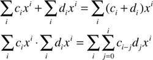
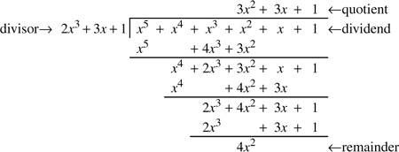

Networking Security Networking Security Networking Security Security Networking Security Networking Security Networking Charlie Kaufman Radia Perlman Mike Speciner Prentice Hall Network Security: Private Communication in a Public World, Second Edition
8.4. Fields
We'll now consider two operators (+ and ·) at the same time, as we do with normal arithmetic on real numbers. The property we'd most like, because we're so used to it, and because it is so useful, is
(D) | Distributivity of · over +. For all a,b,c, a·(b+c) = a·b+a·c. |
Now we can define a field as a structure comprising a set F and two operators, + and ·, satisfying property D and for which <F, +> is a commutative group with identity 0 and <F-{0},·> is a commutative group with identity 1. Examples of fields are
Intuitively, you can think of a field as something like Q, but without any notion of order. We'll use a lot of the same notation as we use for Q, including unary minus (-) for additive inverse (a + -a = 0), a - b for a + -b, and a/b for a·b-1.
For cryptography, it turns out that the most useful fields are finiteÂfields such as Zp. As we'll see after of bit of investigation, there are other finite fields.
A subfield of a field F is a subset of F that is a field under F's operators. If E is a subfield of F, then we say F is a field extension of E.
8.4.1. Polynomials
One of the most useful ways of investigating fields is to consider polynomials c(x) = Σcixi with coefficients ci in some field. You probably remember this sort of thing from high school algebra. We define the degree of a non-zero polynomial to be the highest exponent of x having a non-zero coefficient. (This coefficient is called the leading coefficient.) By convention, the degree of the zero polynomial is - (negative infinity). A polynomial of degree less than 1 is called a constant. A polynomial with leading coefficient 1 is called monic.
We define polynomial addition and multiplication in the usual way:

Note that when multiplying polynomials, the degrees add. (See Homework Problem 6 for an example.) And that's why we had to define the degree of the zero polynomial to be -.
We can also note that polynomials satisfy properties A, C, and D, i.e., if a(x), b(x), and c(x) are polynomials over some field, then property A: a(x) + (b(x) + c(x)) = (a(x) + b(x)) + c(x) and a(x)(b(x)c(x)) = (a(x)b(x))c(x), property C: a(x) + b(x) = b(x) + a(x) and a(x)b(x) = b(x)a(x), and property D: a(x)·(b(x) + c(x)) = a(x)b(x) + a(x)c(x). (See Homework Problem 7.)
Polynomial division is a bit more complicated, but suffice it to say that if we have two polynomials p(x) and d(x), with d(x) non-zero, there are unique polynomials q(x) and r(x), called the quotient and remainder, respectively, such that r(x) has degree smaller than d(x), and p(x) = q(x)d(x) + r(x). If r(x) is zero, we say that d(x) is a factor of p(x), or that d(x) divides p(x). There is a simple algorithm, which we're sure you learned in high school algebra, for computing polynomial quotients and remainders (it's a lot like integer long division):
Initialize q(x) 0, r(x) p(x). Repeat: If degree(r(x)) < degree(d(x)), terminate. s(x) (leading_coefficient(r(x))/leading_coefficient(d(x)))xdegree(r(x))-degree(d(x)) q(x) q(x) + s(x) r(x) r(x) - s(x)d(x)
|
(polynomials over Z5)

|
(See Homework Problem 8.)
Just as we did with integers in §7.2 Modular Arithmetic, we can do modular arithmetic with polynomials. Given a non-zero polynomial m(x) as the modulus, we represent each polynomial p(x) by its remainder when divided by m(x), writing p(x) mod m(x) for that remainder. And just as with integers, we can do addition and multiplication mod m(x) by doing regular addition and multiplication and then taking the remainder. (See Homework Problem 9.) And we can sometimes do division mod m(x)Âby use of multiplicative inverses when they exist.
We can define the greatest common divisor (gcd) of two polynomials as the monic polynomial of highest degree that divides both of them. To compute the gcd, we can perform Euclid's algorithm on polynomials in exactly the same way as we did for integers. We have to perform one final stepÂwe divide by the leading coefficient of the last non-zero remainder to make the gcd monic. So, to compute the gcd of a(x) and b(x), together with u(x) and v(x) such that gcd(a(x),b(x)) = u(x)a(x) + v(x)b(x):
Initial setup: r-2(x) a(x) | u-2(x) 1 | v-2(x) 0 | r-1(x) b(x) | u-1(x) 0 | v-1(x) 1 | n 0 | | |
Step n: If rn-1(x) = 0, go to final step. Otherwise, divide rn-2(x) by rn-1(x) to get quotient qn(x) and remainder rn(x). un(x) un-2(x) - qn(x)un-1(x) | vn(x) vn-2(x) - qn(x)vn-1(x) |
n n + 1 Repeat. Final step: t (leading_coefficient(rn-2(x)))-1 gcd(a(x),b(x)) t·rn-2(x) | u(x) t·un-2(x) | v(x) t·vn-2(x) |
For example, if a(x) = 2x4+3x3+4x2+2x+1 and b(x) = 4x3+1 (polynomials over Z5):
n | qn(x) | rn(x) | un(x) | vn(x) |
|---|
-2 | | 2x4+3x3+4x2+2x+1 | 1 | 0 | -1 | | 4x3+1 | 0 | 1 | 0 | 3x+2 | 4x2+4x+4 | 1 | 2x+3 | 1 | x+4 | 0 | 4x+1 | 3x2+4x+4 | 2 | t = 4 | gcd = x2+x+1 | u(x) = 4 | v(x) = 3x+2 |
We can evaluate a polynomial p(x) at a value v in the field by substituting the value v for each occurrence of x and doing the arithmetic (in the field, of course). Because of the way polynomial addition and multiplication are defined, any equation involving polynomial addition and multiplication will continue to be valid when all the polynomials are evaluated at any particular value v.
We define v to be a root of the polynomial p(x) if p(v) = 0. It's not hard to see that v will be a root iff the degree 1 polynomial (x-v) is a factor of p(x): p(x) = q(x)(x-v) + r(x) with r(x) a constant, say k, by polynomial division, so p(v) = q(v)(v-v) + k = k. Since a degree n polynomial can have at most n degree 1 factors, it can have at most n roots. (See Homework Problem 16.)
Numberlike objects a and b
reveal to us their gcdÂ
a linear combo of the two
with coeffs found from Euclid's brew.
We'll build a table row by row
with columns three. Now here's the flow.
The first two rows will start the run:
first a, one, ought; then b, ought, one.
Discarding rows as we proceed,
The last two rows are all we need.
On these last rows we'll set our sight
and name the objects left to right.
The penult row is j, s, t;
the final row's then k, u, v.
When k is nought, then j will be
the long-sought-after gcd.
This gcd, inversefully,
is s times a plus t times b.
Now Euclid tells us how to step
from two last rows down to the next:
Compute the quotient j slash k;
remainder can be thrown away.
Subtract from the penfinal row
the quotient times the last, and so
a new row forms, and we delete
the first of three, now obsolete.
That's all there is; Euclid we thank.
So this line left intentionally blank.
ÂMike Speciner
|
8.4.2. Finite Fields
If F is a finite field with q elements, then every element of F is a root of xq-x. Why? Well xq- x = x(xq-1-1), so clearly 0 is a root. Now, remember that F-{0} is a group under multiplication, and it has order q-1. Since the order of any group element divides the order of the group, each a ϵ F-{0} satisfies aq-1 = 1. So each non-zero element is a root of xq-1-1. Since there are q elements of F, and xq- x has degree q, we can conclude that xq-x = ΠaϵF (x-a).
In fact, F-{0} is cyclic. Why? Consider the order of each element. We know there is some element g whose order is the least common multiple λ of all those orders. We know that each of the q-1 elements a in F-{0} satisfies aλ = 1 (because λ is a multiple of the order of a), and so are roots of xλ-1. But xλ-1 has degree λ, so there can be at most λ roots. Thus λ  q-1. And we know λ | q-1, so λ = q-1, and F-{0} is cyclic with generator g. q-1. And we know λ | q-1, so λ = q-1, and F-{0} is cyclic with generator g.
8.4.2.1. What Sizes Can Finite Fields Be?
For a finite field, if we start at 0 and continually add 1, we must eventually get back to 0. The number of times we can add 1 before getting back to 0 is called the characteristic of the field. Notationally, we'll write the sequence as 0,1,2,.... Property D (distributivity) allows us to conclude that the characteristic is a prime: if the characteristic were ab with each of a and b smaller than the characteristic, then ab = (Σa times1)(Σb times1) = Σab times1 = 0; so F-{0} would contain a and b but not ab. Distributivity also allows us to conclude that if F has characteristic p, then for any cϵF, Σp times c = (Σp times1)c = 0·c = 0.
Now we'll enumerate the elements of a finite field F of characteristic p. We'll pick a sequence of elements ai of F so that each new element can't be expressed as a linear combination Σciai (with coefficients ci ϵ Zp) of the previously selected elements. Eventually, we'll run out of new elements. Then each element of F will be representable as a linear combination of elements of the sequence, with coefficients in Zp. If there are n elements in the sequence, then there are pn linear combinations Σi<nciai where ciϵZp. No two of these can be equal because we could then solve for the last ai for which the coefficients differ, as a linear combination of the earlier ais, contrary to our choice of ais.
So |F| = pn.
8.4.2.2. Representing a Field
It turns out that, for a given prime p and positive integer n, there is exactly one field of order q = pn. It is the splitting field of xq- x (considered as a polynomial over Zp), the smallest field extension of Zp in which xq- x factors completely into degree 1 polynomials. It is called the Galois field of order q, written GF(q). But there are many ways to represent this field. We now have a sufficient handle on finite fields to be able to represent them in a way that allows us to compute with them. We'll choose a prime p and a positive integer n, thus determining the field F of order q = pn. Pick a (multiplicative) generator g of F-{0}. Consider g0,g1,..., gn-1. These must be linearly independent over Zp, i.e. there's no non-trivial linear combination of them that equals 0, because otherwise we'd have gk = Σi<kcigi for some k < n, and so, since every non-zero element of F is gm for some m, we could express every element of F as a linear combination of g0, g1,..., gk-1 with coefficients from Zp, but there are only pk such linear combinations. Conversely, by the proof of |F| = pn, there can be no more than n linearly independent elements of F, so gn = Σi<ncigi for some (unique) set of coefficients c0,...,cn-1 determined by the generator we chose.
So we can represent any element a of F as a sequence of n elements of Zp, namely the coefficients ai of g0,g1,..., gn-1 for which a = Σi<naigi. Addition is just componentwise addition in Zp. Multiplication is like polynomial multiplication, but we have to convert terms with exponents n by use of gn = Σi<ncigi. The most straightforward technique (but by no means the most efficient) is to decompose the multiplication into a sequence of multiplications by g, multiplications by elements of Zp, and componentwise additions. Multiplying by g is easy: gΣi<naigi = Σi<n(ai-1+cian-1)gi, where a-1 = 0. Multiplication by bj is trivial: bjΣi<naigi = Σi<naibj gi. So to multiply a = Σi<naigi by b = Σj<nbjgj, we multiply a by bn-1, then for j = n-2 to 0, multiply the result by g and add abj.
We also need to be able to compute negation (additive inverse) and (multiplicative) inverse. Negation is just componentwise negation in Zp. Inverse is more difficult, but as we commented before, we can make use of the Euclidean algorithm for polynomials over Zp. (Alternatively, we could exponentiate to the power q-2, since for a ϵ F-{0}, a·aq-2 = aq-1 = 1.) If a = Σi<naigi, let γ(x) = Σi<naixi. Let γ(x) = xn - Σi<ncixi. Note γ(g) = 0. If we perform Euclid's algorithm on α(x) and γ(x), we get polynomials μ(x) and v(x) such that α(x)μ(x) + γ(x)v(x) = gcd(α(x),γ(x)). Note that, since γ(g) = 0, α(g)μ(g) = gcd(α(x),γ(x))(g). If the gcd of α(x) and γ(x) is 1, then μ(g) is a-1. But if the gcd is not 1, then a has no inverse. Since F-{0} is a group under ·, every nonzero a has an inverse, so no non-constant α(x) can divide γ(x), i.e. γ(x) has no non-trivial factors. A polynomial with no non-trivial factors is called irreducible. So the field can be thought of as polynomials over Zp modulo the irreducible polynomial γ(x).
We could equally well have started with the irreducible polynomial γ(x) instead of the element g. Any choice of an irreducible nth degree polynomial γ(x) over Zp will produce a representation of GF(pn).
|